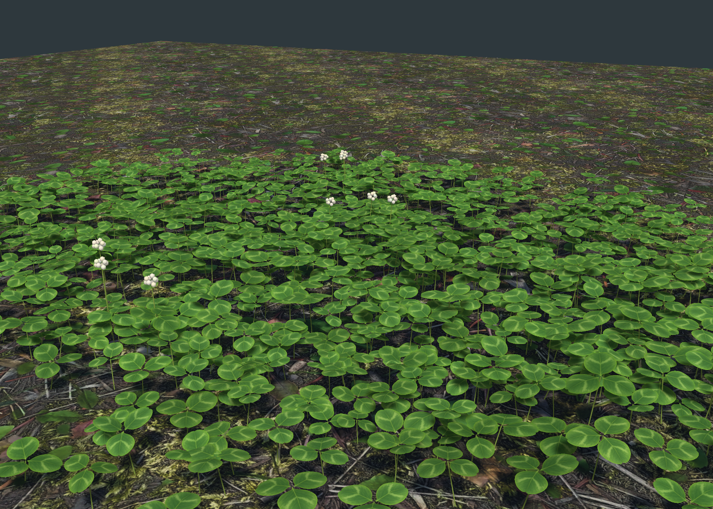

Clover v02 · Asset review
FIRST SETTLERS / FOLIAGE ASSET REVIEWClover, built leaf by leaf.
Individual three-leaf heads, combined into irregular meshes. Shallow leaf curvature, clear silhouettes, simple green shading and occasional white blooms. Every image below is a render of the delivered asset.

Woodland ground · Unity URPNew clover assets over the project's existing leaf litter texture. Isolated authoring preview.